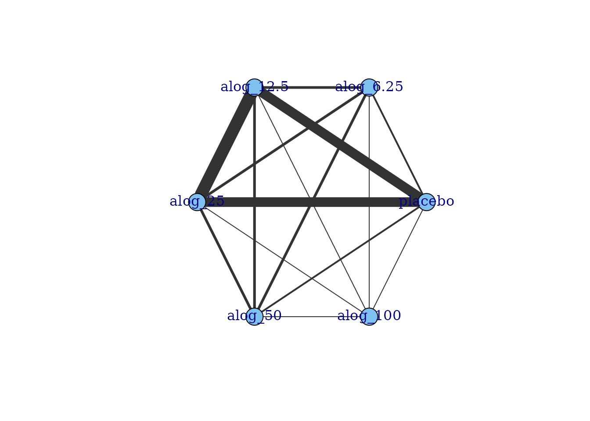
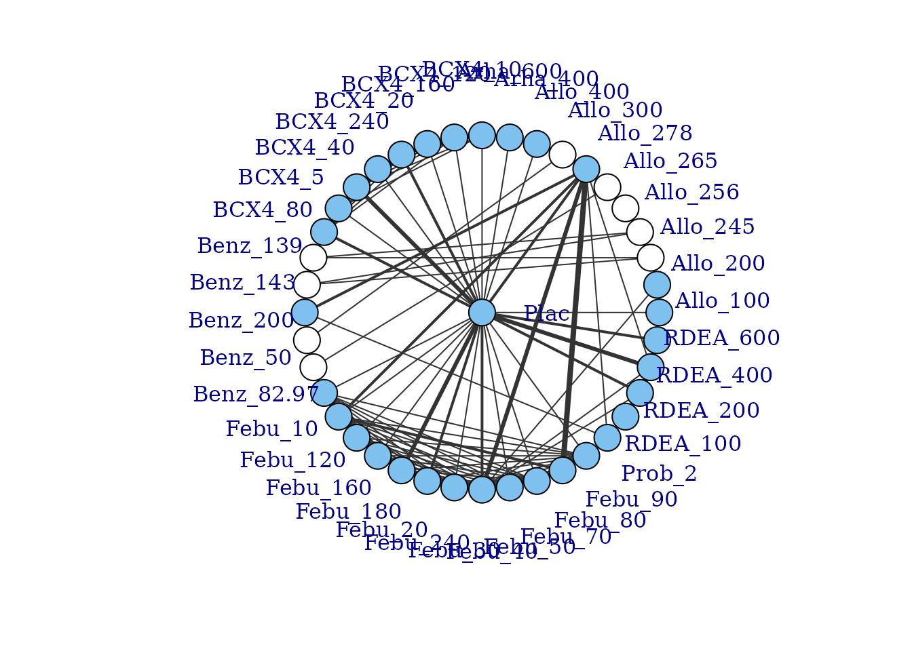
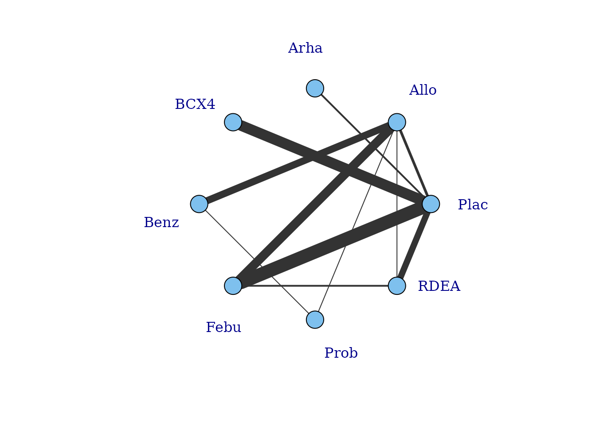
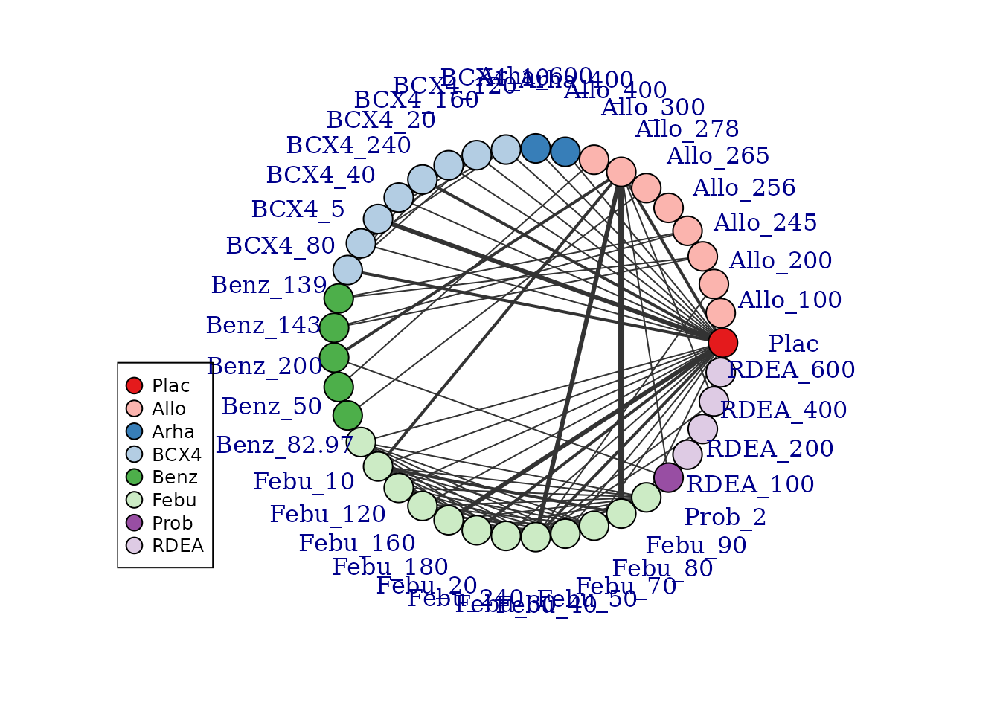
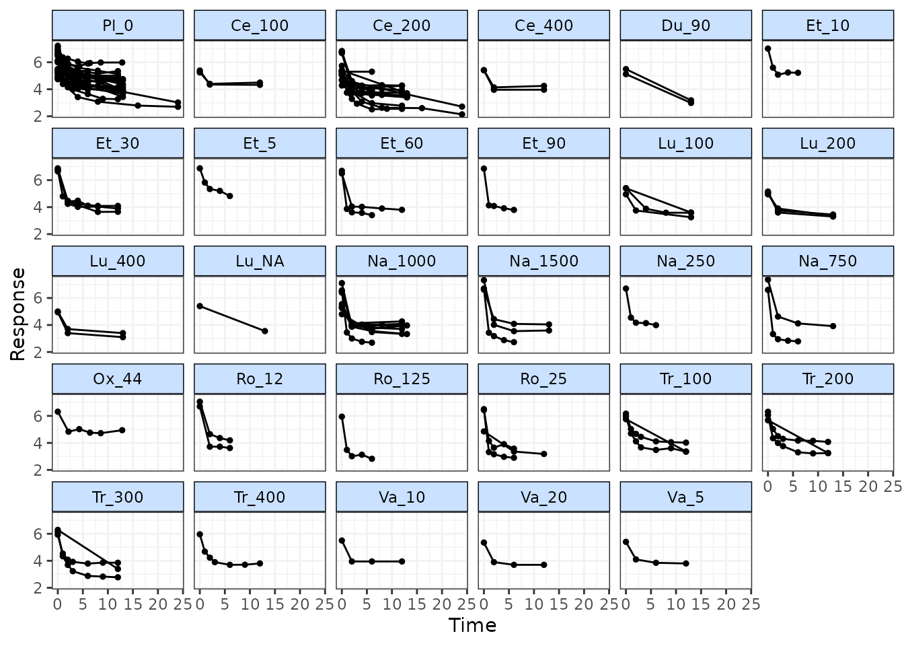
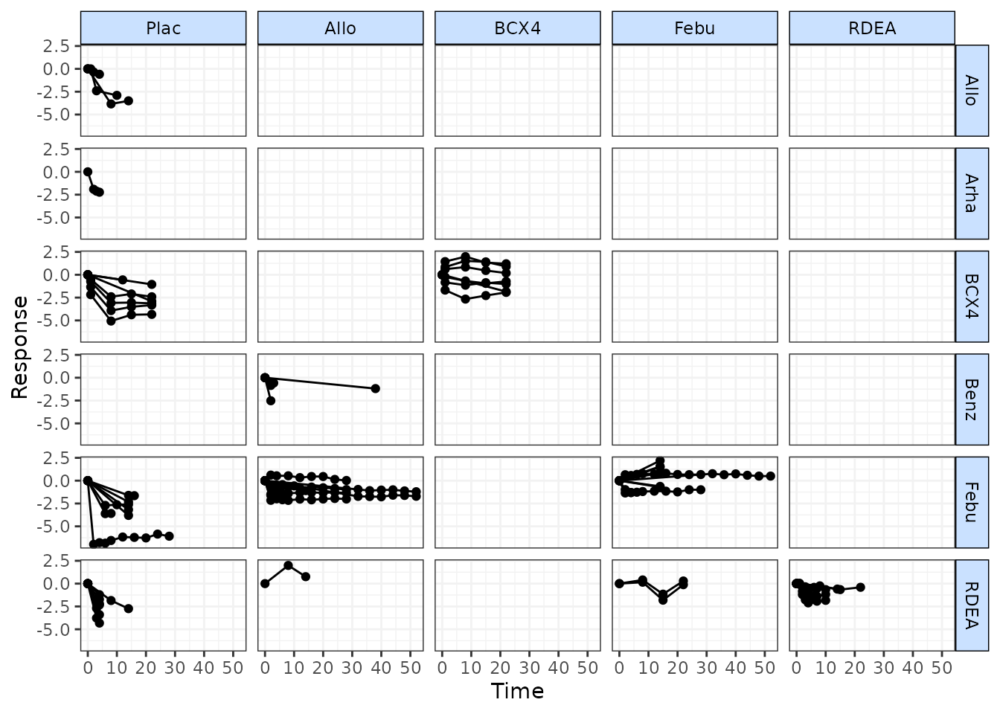
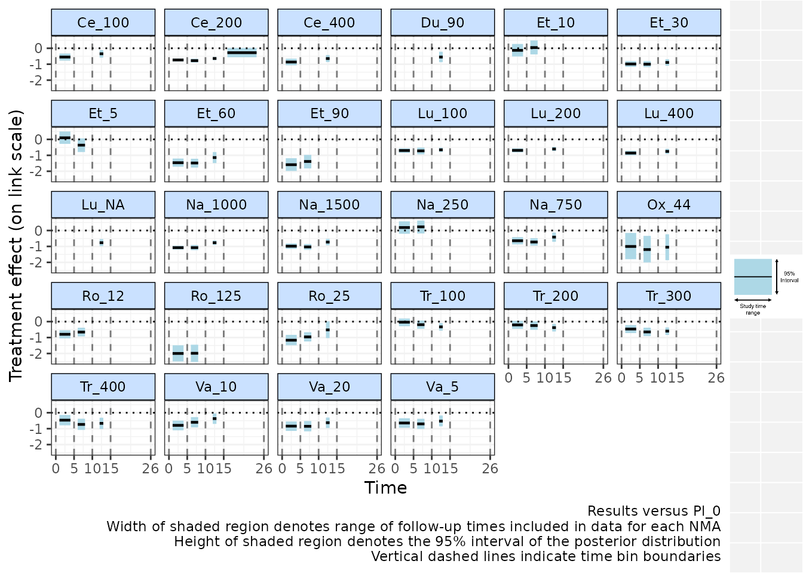

Exploring the data
Hugo Pedder
2025-01-21
dataexploration-1.RmdInspecting the data
Before embarking on an analysis, the first step is to have a look at
the raw data. Two features (network connectivity and time-course
relationship) are particularly important for MBNMA. To investigate these
we must first get our dataset into the right format for the package. We
can do this using mb.network(). This requires specifying
the desired treatment to use for the network reference treatment, though
one will automatically be specified if not given.
# Using the pain dataset
network.pain <- mb.network(osteopain, reference = "Pl_0")
#> Studies reporting change from baseline automatically identified from the data
print(network.pain)
#> description :
#> [1] "Network"
#>
#> data.ab :
#> studyID time treatment narm arm y se treatname
#> 1 Gottesdiener 2002 0 1 6 1 7.062 0.2221675 Placebo_0
#> 2 Gottesdiener 2002 0 6 6 2 7.009 0.1605568 Etoricoxib_10
#> 3 Gottesdiener 2002 0 7 6 3 6.756 0.1696070 Etoricoxib_30
#> 4 Gottesdiener 2002 0 8 6 4 6.873 0.1584104 Etoricoxib_5
#> 5 Gottesdiener 2002 0 9 6 5 6.686 0.1619320 Etoricoxib_60
#> 6 Gottesdiener 2002 0 10 6 6 6.854 0.1620282 Etoricoxib_90
#> fupcount fups
#> 1 1 5
#> 2 1 5
#> 3 1 5
#> 4 1 5
#> 5 1 5
#> 6 1 5
#> [ reached 'max' / getOption("max.print") -- omitted 411 rows ]
#>
#> studyID :
#> [1] "Gottesdiener 2002" "Schnitzer 2005_2" "Bensen 1999"
#> [4] "DeLemos 2011" "Gana 2006" "Kivitz 2001"
#> [7] "Kivitz 2002" "Fishman 2007" "Fleischmann 2005"
#> [10] "Lehmann 2005" "Schnitzer 2010" "Sheldon 2005"
#> [13] "Tannenbaum 2004" "Baerwald 2010" "Bingham 2007a"
#> [16] "Bingham 2007b" "Birbara 2006_1" "Birbara 2006_2"
#> [19] "Enrich 1999" "Leung 2002" "Schnitzer 2011LUM"
#> [22] "Sowers 2005" "Chappell 2009" "Chappell 2011"
#> [25] "Clegg 2006" "Markenson 2005" "McKenna 2001"
#> [28] "Puopolo 2007" "Sawitzke 2010" "Williams 2001"
#>
#> cfb :
#> [1] FALSE FALSE FALSE FALSE FALSE FALSE FALSE FALSE FALSE FALSE FALSE FALSE
#> [13] FALSE FALSE FALSE FALSE FALSE FALSE FALSE FALSE FALSE FALSE FALSE FALSE
#> [25] FALSE FALSE FALSE FALSE FALSE FALSE
#>
#> treatments :
#> [1] "Pl_0" "Ce_100" "Ce_200" "Ce_400" "Du_90" "Et_10" "Et_30"
#> [8] "Et_5" "Et_60" "Et_90" "Lu_100" "Lu_200" "Lu_400" "Lu_NA"
#> [15] "Na_1000" "Na_1500" "Na_250" "Na_750" "Ox_44" "Ro_12" "Ro_125"
#> [22] "Ro_25" "Tr_100" "Tr_200" "Tr_300" "Tr_400" "Va_10" "Va_20"
#> [29] "Va_5"This takes a dataset with the columns:
-
studyIDStudy identifiers -
timeNumeric data indicating continuous follow-up times (e.g. days, weeks, months) -
yNumeric data indicating the mean response for a given observation -
seNumeric data indicating the standard error for a given observation -
treatmentTreatment identifiers (can be numeric, factor or character) -
classAn optional column indicating a particular class that may be shared by several treatments. -
NAn optional column indicating the number of participants used to calculate the response at a given observation.
Additional columns can be included in the dataset. These will simply
be added to the mb.network object, though will not affect
the classification of the data.
mb.network then performs the following checks on the
data:
- The dataset has the required column names
- There are no missing values
- All standard errors (SE) are positive
- Observations are made at the same time points in all arms of a study (i.e. the data are balanced)
- Class labels are consistent within each treatment
- Studies have at least two arms
Unless otherwise specified, mb.network() will
automatically determine whether each study in the dataset is reported as
change from baseline or absolute - studies that include a measurement at
time=0 are assumed to report absolute values, whilst those
with no measurement at time=0 are assumed to be change from
baseline. This can also be explicitly specified by the user by including
a logical vector for the argument cfb in
mb.network() - TRUE indicates a study reports
change from baseline, and FALSE indicates that it reports
absolute values.
Finally, mb.network() converts the data into an object
of class("mb.network"), which contains indices for study
arms and follow-up measurements, and generates numeric values for
treatments and classes. By convention, treatments are numbered
alphabetically, though if the original data for treatments is provided
as a factor then the factor codes will be used. This then contains all
the necessary information for subsequent MBNMAtime
functions.
Network connectivity
Looking at how the evidence in the network is connected and
identifying which studies compare which treatments helps to understand
which treatment effects can be estimated and what information will be
helping to inform those estimates. A network plot can be generated which
shows which treatments have been compared in head-to-head trials.
Typically the thickness of connecting lines (“edges”) is proportional to
the number of studies that make a particular comparison and the size of
treatment nodes (“vertices”) is proportional to the total number of
patients in the network who were randomised to a given treatment
(provided N is included as a variable in the original
dataset for mb.network()).
In MBNMAtime these plots are generated using
igraph, and can be plotted by calling plot().
The generated plots are objects of class("igraph") meaning
that, in addition to the options specified in plot(),
various igraph functions can be used to make more detailed
edits to them.
# Prepare data using the alogliptin dataset
network.alog <- mb.network(alog_pcfb, reference = "placebo")
#> Studies reporting change from baseline automatically identified from the data
# Plot network
plot(network.alog)
Within these network plots, treatments are automatically aligned in a circle (as the default) and can be tidied by shifting the label distance away from the nodes.
# Draw network plot in a star layout using the gout dataset
network.gout <- mb.network(goutSUA_CFB, reference = "Plac")
plot(network.gout, layout=igraph::as_star(), label.distance = 5)#> Studies reporting change from baseline automatically identified from the data
This command returns a warning stating that some treatments are not connected to the network reference treatment through any pathway of head-to-head evidence. The nodes that are coloured white represent these treatments. This means that it will not be possible to estimate relative effects for these treatments versus the network reference treatment (or any treatments connected to it). Several options exist to allow for inclusion of these treatments in an analysis which we will discuss in more detail later, but one approach is to assume a shared effect among treatments within the same class/agent. We can generate a network plot at the class level to examine this more closely, and can see that the network is connected at the class level.
plot(network.gout, level = "class", remove.loops = TRUE, label.distance = 5)
It is also possible to plot a network at the treatment level but to colour the treatments by the class that they belong to.
plot(network.gout, level = "treatment", v.color = "class", label.distance = 5)
Examining the time-course relationship
In order to consider which functional forms may be appropriate for
modelling the time-course relationship, it is important to look at the
responses in each arm plotted over time. This can easily be done using
the timeplot() function on an object of
class("mb.network")
# Prepare data using the pain dataset
network.pain <- mb.network(osteopain, reference="Pl_0")
#> Studies reporting change from baseline automatically identified from the data
# Draw plot of raw study responses over time
timeplot(network.pain)
As the mean response for all treatments shows a rapid reduction in pain score followed by a levelling out after 2-5 weeks, an Integrated Two-component Prediction (ITP) time-course function might be a reasonable fit for this dataset. More complex alternatives could be Emax models (with or without a Hill parameter), fractional polynomials or a spline function.
Responses can also be plotted grouped by class rather than by treatment, and the relative effects between each treatment/class can be plotted instead of the absolute treatment responses. Since the MBNMA framework models the time-course on relative effects (Pedder et al. 2019) this can in fact make interpretation of the plots easier with regards to identifying a best-fitting time-course function.
# Draw plot of within-study relative effects over time grouped by class
network.gout <- mb.network(goutSUA_CFBcomb)
timeplot(network.gout, level="class", plotby="rel")
Many of the profiles here appear to be quite different within the same class, which would suggest modelling class effects may be inappropriate for this dataset.
Another approach to investigate the time-course relationship is to perform several standard “lumped” NMAs at different time “bins”, time periods within which we are assuming treatment effects are constant over time. This means that, for the purposes of this plot, rather than considering time as a continuous variable it is chunked up into segments.
We can do this within a single plot using binplot() and
specifying the boundaries of multiple time bins. Separate NMAs are then
performed within each time bin on data points from studies that fall
within the time bin (only a single follow-up time is taken from each
study to avoid double counting). "fixed" or
"random" effects can be specified for the NMA. Note that
the wider the time bin boundaries specified by the user, the larger the
potential range of included follow-up times and this can introduce
heterogeneity or inconsistency.
# Plot results for NMAs performed between 0-5, 5-10, 10-15 and 15-26 weeks
binplot(network.pain, overlay.nma=c(0,5,10,15,26))
#> Running overlay.nma for time=0 and time=5
#> module glm loaded
#> Running overlay.nma for time=5 and time=10
#> Running overlay.nma for time=10 and time=15
#> Running overlay.nma for time=15 and time=26
Results are plotted versus the network reference and are plotted on
the relevant scale depending on the function specified in
link (in this case "identity" - i.e. mean
differences versus Pl_0 are shown). Each time bin window is marked on
the plot by vertical dashed lines. The NMA estimates within each time
bin are plotted as a horizontal solid black line (the posterior median)
with a shaded region indicating the 95% credible interval (prediction
intervals can instead be plotted). The width of these shaded regions is
equal to the range of study time-points included in the NMA performed
within that time-bin, which may therefore be more narrow than the time
bin specified in the binplot() command due to the follow-up
times at which data is available in included studies. For example, for
the time bin between 10-15 weeks, studies from the dataset included in
this time bin have follow-ups between 12-13 weeks.
From this plot we can see that, whilst there clearly is a rapid onset of treatment efficacy within the first 5 weeks, indicated by a treatment effect <0 for most treatments. This treatment effect then persists and remains more or less constant for some treatments within later time bins, though for others (e.g. Ce_200, Ro_25, Na_1000, Na_1500, Va_10) there appears to be a loss of efficacy for later time bins, suggesting a more complex time-course function may be required to fully capture this relationship.